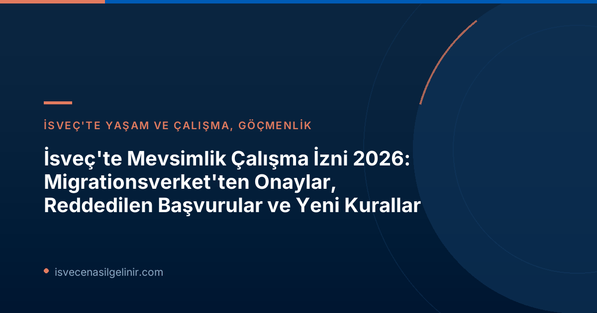

2026 Mevsimlik Çalışma İzni Başvurularında Son Durum: Onaylar ve Redler
Migrationsverket'in 10 Temmuz 2026 tarihli açıklamasına göre, bu yıl mevsimlik işler için yapılan başvurularda önemli bir değerlendirme süreci tamamlandı. Toplamda yaklaşık 3.400 başvuru onaylanarak İsveç ekonomisinin can damarı olan tarım, ormancılık ve gıda toplama gibi sektörlerdeki işgücü açığının kapatılmasına katkıda bulunuldu. Ancak her başvuru olumlu sonuçlanmadı; yaklaşık 1.600 başvuru çeşitli nedenlerle reddedildi. Bu sayılar, İsveç'in uluslararası işgücüne olan ihtiyacını ve aynı zamanda göçmenlik süreçlerindeki titizliği gözler önüne seriyor.
Mevsimlik Çalışma İzninde Reddedilme Nedenleri Nelerdir?
Mevsimlik çalışma izni başvurularının reddedilme nedenleri oldukça çeşitlidir ve genellikle başvuru sahiplerinin veya işverenlerin belirli standartları karşılamamasından kaynaklanır. Migrationsverket, bu ret kararlarının arkasındaki başlıca faktörleri şöyle sıralamaktadır:
- İşverenin Ekonomik Yeterliliği: İşveren şirketin, çalışanları istihdam etme ve yasal yükümlülüklerini yerine getirme konusunda finansal yeterliliğe sahip olmaması.
- Çalışma Koşullarındaki Eksiklikler: Sunulan maaş, sigorta veya diğer çalışma koşullarının İsveç toplu sözleşmeleri veya sektördeki genel uygulamaların altında kalması.
- Yanlış İlan ve Reklam Süreçleri: İş ilanlarının hem İsveç'te hem de AB genelinde yasal olarak öngörülen en az 10 günlük süre boyunca uygun şekilde duyurulmaması.
- Konut ve Sağlık Sigortası Eksikliği: Başvuru sahibine izin süresi boyunca uygun standartta bir konut ve kapsamlı bir sağlık sigortasının sağlanmamış olması.
- Geri Dönüş Niyetinin Eksikliği: Çalışanın mevsimlik çalışma izni sona erdikten sonra anavatanına geri döneceğine dair yeterli kanıt sunamaması.
- AB İkamet Durumu: Başvuru sahibinin zaten bir AB ülkesinde ikamet ediyor olması (mevsimlik direktifi kapsamında dışarıdan gelen işçiler için geçerlidir).
İşgücü Sömürüsüyle Mücadele ve Risk Sektörleri
Migrationsverket, mevsimlik işgücünün istihdam edildiği bazı sektörleri işgücü sömürüsü açısından "riskli" olarak tanımlamaktadır. Ormancılık, meyve toplama ve hatta inşaat gibi sektörlerde zaman zaman kötü koşulların ortaya çıktığı belirtilmektedir. Kurum, bu tür suiistimallerin önüne geçmek amacıyla Emniyet Teşkilatı, İsveç İş Ortamı Kurumu (Arbetsmiljöverket), İsveç Vergi Dairesi (Skatteverket) ve yerel belediyeler dahil olmak üzere çeşitli devlet kurumlarıyla yakın işbirliği içinde çalışmaktadır. Amaç, yasalara uygun hareket eden şirketleri desteklerken, kötü niyetli uygulamaları ortadan kaldırmaktır.
Önemli Bilgi: İşgücü Sömürüsü
İşgücü sömürüsü, çalışanların haklarından mahrum bırakılması, düşük ücretle veya sağlıksız koşullarda çalıştırılması gibi durumları kapsayan ciddi bir toplumsal sorundur. İsveç makamları, bu sorunla mücadele etmek için kararlılıkla çalışmaktadır. Çalışma izni başvurularında uygun koşulların sağlanması, bu mücadelenin önemli bir parçasıdır.
Meyve Toplama Sektöründe Yeni Kurallar ve İstisnalar
İsveç'te meyve toplama işi, özellikle Taylandlı vatandaşlar arasında popüler bir mevsimlik çalışma alanıdır (işgücünün yaklaşık %90'ı Taylandlılardan oluşmaktadır). Ancak bu sektörde de geçmişte işgücü sömürüsü vakaları yaşanmıştır. Bu bağlamda, Haziran ayında yürürlüğe giren yeni bir düzenlemeyle önemli bir değişikliğe gidilmiştir: ormanlık alanda meyve toplama işleri, istihdam koşulları ne olursa olsun, çalışma izni hakkı vermeyecektir.
Ancak Migrationsverket, bu kuralın önemli bir istisnası olduğunu belirtiyor: "Meyve toplayıcılarının çoğu, AB'nin mevsimlik istihdam direktifi kapsamında izin başvurusu yaptığı için bu dışlamadan etkilenmemektedir." Bu yıl, AB direktifi kapsamında yapılan yaklaşık 1.500 meyve toplama başvurusu karara bağlanmış; bu başvurulardan 950'si onaylanırken, 600'ü reddedilmiştir. Bu durum, AB direktifi kapsamında uygun koşullarla yapılan başvuruların hala kabul edildiğini göstermektedir. İsveç kanunları ve göçmenlik süreçleri hakkında daha fazla bilgi ve rehberlik için sverigemedborgarskapsprov.com adresini ziyaret edebilirsiniz.
AB Mevsimlik İstihdam Direktifi Kapsamında Temel Şartlar
Mevsimlik çalışma izni için AB direktifi kapsamında başvuranların sağlaması gereken temel koşullar şunlardır:
| Kriter | Açıklama |
|---|---|
| Maaş ve Çalışma Koşulları | Maaş, sigortalar ve öbür çalışma koşulları, İsveç toplu sözleşmeleri veya ilgili sektörün standartlarından daha kötü olmamalıdır. Tam zamanlı çalışanlar için asgari ücrete eşit veya daha yüksek bir maaş garanti edilmelidir, bu kural yarı zamanlı çalışma durumları için de geçerlidir. |
| Konut ve Sağlık Sigortası | Çalışma izni süresince başvuru sahibine uygun standartlarda bir konut ve kapsamlı bir sağlık sigortası sağlanmalıdır. |
| İşe Alım Süreci | İşe alım prosedürleri, İsveç'in AB içindeki taahhütleriyle uyumlu olmalıdır. İş ilanları, hem İsveç'te hem de AB genelinde en az 10 gün süreyle yayınlanmalıdır. |
| Geri Dönüş Niyeti | Başvuru sahibinin, mevsimlik çalışma izni süresi sona erdiğinde kendi ülkesine geri dönme niyeti olduğunu göstermesi ve bunu kanıtlayabilmesi gerekmektedir. |
| AB İkamet Durumu | Çalışan, AB üyesi bir ülkede ikametgah sahibi olmamalıdır. |
Geleceğe Yönelik Bakış ve Öneriler
İsveç, mevsimlik işgücüne olan ihtiyacını sürdürmeye devam ederken, işçi haklarını korumaya ve istismar vakalarının önüne geçmeye büyük önem vermektedir. Mevsimlik çalışma için İsveç'e gelmeyi düşünen adayların ve işverenlerin yukarıda belirtilen şartlara ve yeni düzenlemelere dikkat etmeleri büyük önem taşımaktadır. Başvuru süreçlerinde şeffaflık, yasalara uygunluk ve etik çalışma koşulları, hem başarılı bir başvuru hem de sürdürülebilir bir işgücü piyasası için elzemdir.
Başvurunuzda herhangi bir sorun yaşamamak adına, tüm belgelerin eksiksiz ve doğru olmasını sağlamalı, işvereninizin yasalara tam uyum gösterdiğinden emin olmalısınız. Ayrıca, çalışma izni süreniz sona erdikten sonra ülkenize geri dönüş niyetinizi açıkça ortaya koyan kanıtlar sunmanız, genellikle başvuru değerlendirmesinde olumlu bir etki yaratacaktır.
İsveç'teki Fırsatları Kaçırmayın!
İsveç'te mevsimlik çalışma izni veya diğer göçmenlik süreçleri hakkında daha fazla bilgi almak, başvuru adımları ve gerekli belgeler konusunda uzman desteği almak için bizimle iletişime geçin. Hayallerinizdeki İsveç yaşamına bir adım daha yaklaşın!